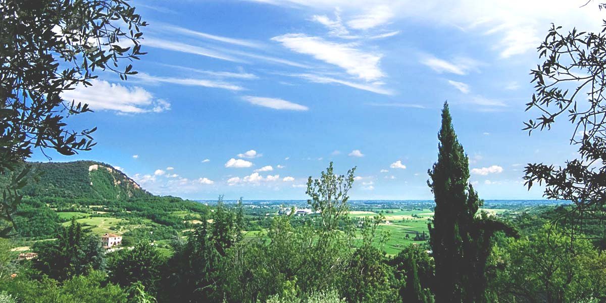

首选 · 特别午餐把它当作随时可插入的 3.5–5小时模块：睡饱后进村，在 Casa del Petrarca 用45分钟看懂村庄背景，再把主要时间留给 La Montanella。若有 jet lag，Casa 和下午延伸都能独立删掉。
最好时段
工作日上午11点前后或16点以后。默认导航至 Via Fontana, 3 官方付费停车场，再步行进村；费率官网未公布，以现场表计为准。9月17–20日 Vo’ 葡萄节期间预留更多车流时间。
一眼事实
- 门到门：从家约15–20分钟。
- 合理停留：3.5–5小时。
- 路面：石板与坡路，穿防滑鞋。
- 预约：餐厅要订；Casa通常现场购票。
今天怎么选
- 完整：Casa＋村庄＋Montanella。
- 低体力：村庄30–45分钟＋长午餐。
- 重视酒：村庄＋午餐，酒庄另择一天预约。
三个具体选择
三个模块可以自由组合：特别午餐、村庄文化、日落晚餐。三项都是平行模块，可按兴趣和到达时间组合。
一个不赶的完整半天
Casa 有午休，因此上午先完成室内，餐后所有内容都保持可删。
离开家
确认Casa不是周一关闭；穿适合石板坡路的鞋。
Via Fontana停车
付费后步行进村，不在狭窄中心继续找车位。
Piazza Petrarca与墓
先看村庄空间，15–20分钟即可。
Casa del Petrarca
留40–45分钟；最后入场为闭馆前30分钟。
Loggia与Oratorio
用半小时走上村、看视野，不需要走遍所有巷子。
La Montanella
预订四人桌，午餐留约两小时；司机不喝酒。
espresso与giuggiole
只买真正想带回家的橄榄油或当地制品。
回家 / 短走
天气凉爽且精神好才走一小段Monte Calbarina；否则约16:00到家。
四人预算
- Casa：€24。
- 停车：官网未公布，规划€4–8。
- Montanella：按现行单点菜单规划€160–260/四人。
- 咖啡与地方食品：€20–35。
合计约€210–330/四人。餐饮合计是规划区间，不是套餐报价。
本页依据
Casa票价与时间核对自 Padova Musei；停车核对自 Arquà市政府旅游页；餐厅价格核对自 La Montanella菜单 与 Osteria Lapilli。核对于2026年9月4日。